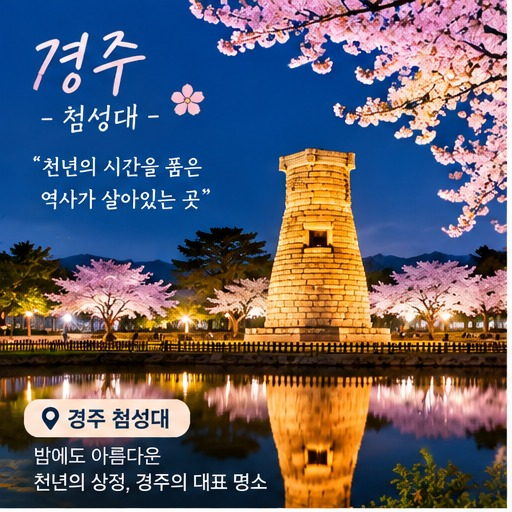
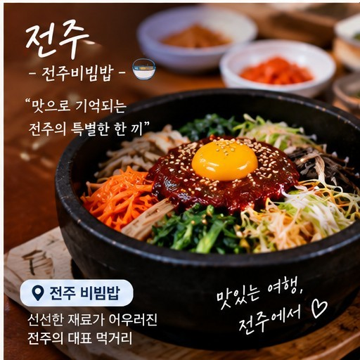
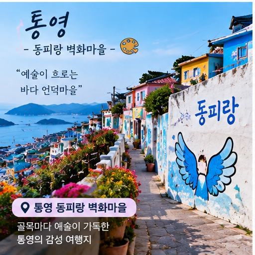

연휴에 가족과 떠나기 좋은
1박 2일 여행지 BEST 3
긴 여행은 부담스럽고 집에만 있기는 아쉬운 연휴. 가족과 함께 1박 2일로 다녀오기 좋은 경주, 전주, 통영 여행 코스를 정리해 보았습니다.
1. 경주 — 역사와 야경을 함께

경주는 낮에는 신라의 역사 유적을 둘러보고, 저녁에는 월정교와 동궁과 월지의 야경까지 즐길 수 있어 1박 2일 여행에 잘 어울립니다.
1일차
대릉원 → 황리단길 산책과 식사 → 첨성대 → 동궁과 월지 → 월정교 야경 → 숙박
2일차
국립경주박물관 또는 불국사 → 점심 → 카페나 기념품 구경 후 귀가
밤까지 볼거리가 이어져 짧은 일정에도 여행 분위기를 충분히 느끼기 좋습니다.
2. 전주 — 걷고 먹는 여유로운 여행

전주는 한옥마을을 중심으로 경기전, 전동성당, 오목대 등 여러 명소를 비교적 가까운 거리에서 둘러볼 수 있습니다. 맛있는 먹거리와 전통적인 풍경을 함께 즐기기 좋은 곳입니다.
1일차
경기전 → 전동성당 → 전주한옥마을 골목 산책 → 남부시장 또는 전주 시내에서 저녁 → 한옥 숙소나 시내 숙박
2일차
오목대 → 전주향교 또는 전통문화 공간 → 점심 → 카페에서 쉬었다가 귀가
차로 계속 이동하기보다 천천히 걷고 먹으며 쉬는 여행을 좋아한다면 특히 잘 맞습니다.
3. 통영 — 바다와 체험을 한 번에

통영은 바다 풍경과 골목 여행, 체험형 관광을 함께 즐길 수 있는 곳입니다. 여행 취향에 따라 동피랑, 케이블카, 루지 등을 골라 일정을 짤 수 있습니다.
1일차
통영 도착 → 중앙시장과 강구안 주변 → 동피랑 산책 → 바다 보이는 곳에서 저녁 → 숙박
2일차
통영 케이블카 또는 루지 체험 → 점심 → 해안 산책 → 귀가
바다를 좋아하면서 아이들과 할 수 있는 체험도 함께 찾는 가족에게 좋은 선택입니다.
어디로 갈까?
| 경주 | 역사, 산책, 야경을 고루 즐기고 싶을 때 |
|---|---|
| 전주 | 먹거리와 한옥마을을 천천히 즐기고 싶을 때 |
| 통영 | 바다 풍경과 체험 활동을 함께 즐기고 싶을 때 |
연휴에는 숙소와 인기 체험이 빨리 마감될 수 있으니, 출발 전 운영시간과 예약 가능 여부를 확인하는 것이 좋습니다.
참고: 한국관광공사 ‘대한민국 구석구석’의 경주·전주 1박 2일 추천 코스와 통영 관광 정보를 바탕으로 여행 동선을 쉽게 정리했습니다. 실제 운영시간·요금·휴무일은 방문 전에 각 관광지 공식 안내를 확인하세요.
← 오늘의 이야기 홈으로 돌아가기